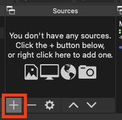
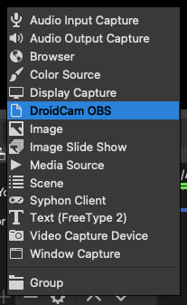
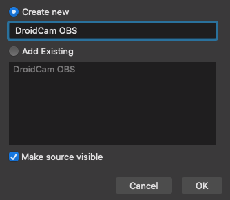
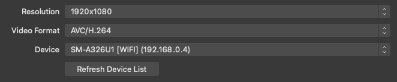
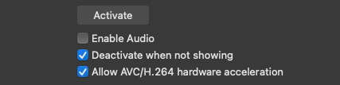
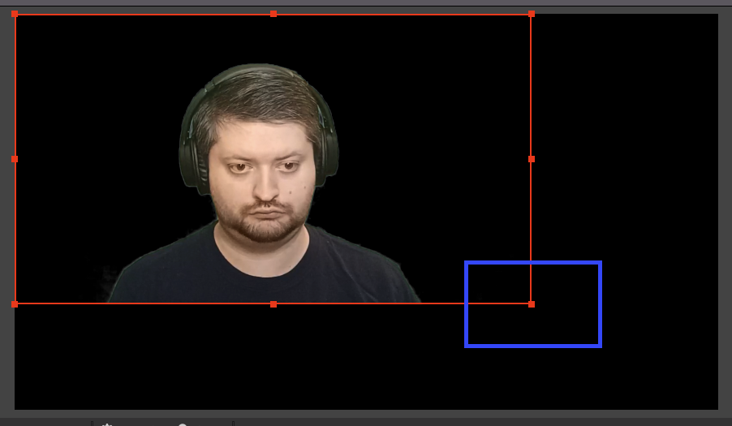
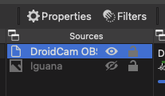
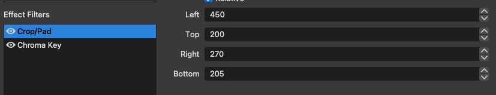
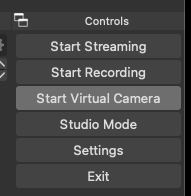
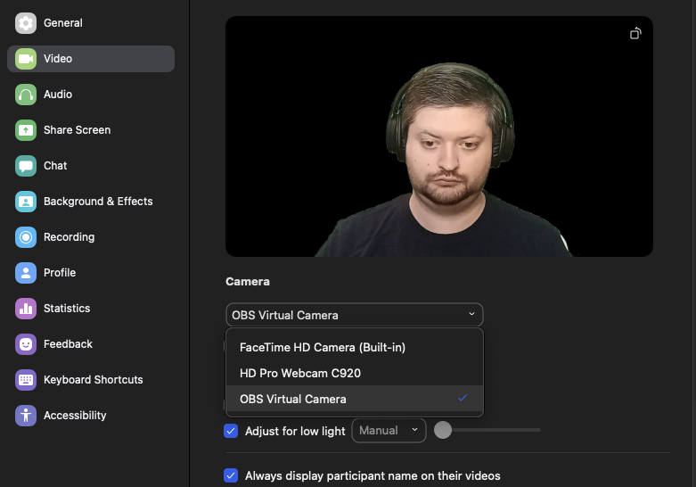

Hardware
You will need a way to mount the phone above your monitor in a stable, reliable position. I went with a gooseneck clamp mount mounted to my wall, but many options exist.
Software
On your phone:
-
DroidCam OBS (note that this is different from DroidCam; make sure to install the OBS version)
- The free version has limited resolution, but is still usable. The pro version is 10$.
On your computer:
Setup
- Start DroidCam OBS on your phone, confirm all the access permissions, and then select which camera you want to use (front-facing if you want a live feed). Make sure to leave DroidCam OBS open.
- Start OBS Studio on your computer. The first time it boots up, it will ask if you primarily intend to use it for streaming or recording. This answer doesn't matter, so click through and skip.
-
In the Sources dock, click the add button, then DroidCam OBS, and then OK.



-
In the resulting properties dialog, select your desired resolution, then refresh the devices list and select your phone from the list.


- If your phone doesn't appear, make sure DroidCam OBS is open on your phone, then refresh the list in OBS Studio again.
- If it still doesn't appear, manually enter the WiFi IP displayed on your phone into the properties in OBS Studio.
- Check whichever options you want in the properties (I like "Deactivate when not showing as it allows me to disable the webcam by just hiding the source) and then click "Activate". You should now see the video feed from your phone on both your OBS source properties window and your phone's screen. Click OK to close the properties.
-
If you're working with a lower-resolution camera, expand the source (by dragging the red handles) to fill the full preview window in the main OBS view.

-
If you want to crop the view or add other effects, select the source and click "Filters". I use a crop filter and a chroma-key filter.


-
Almost done! Click the "Start Virtual Camera" button on the right. There may be a prompt you have to click through.

-
Go to Zoom video settings and select the OBS Virtual Camera.

- Enjoy!
- To set this up again after reboot, just launch DroidCam OBS on your phone, OBS Studio on your computer, and click Start Virtual Camera.